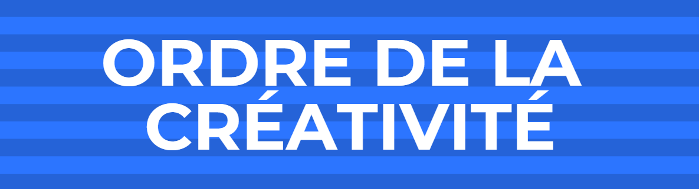

| Disinction | Signification |
|---|---|
|  | L'Ordre de la Créativité célèbre les membres innovants et créatifs de PabloNews, honorant les esprits visionnaires et les idées originales. L'Ordre de la Créativité est décerné aux membres présentant des projets exceptionnels, introduisant des formats novateurs ou démontrant une pensée créative exceptionnelle. |
L'Ordre de la Créativité célèbre les membres innovants et créatifs de PabloNews, honorant les esprits visionnaires et les idées originales. L'Ordre de la Créativité est décerné aux membres présentant des projets exceptionnels, introduisant des formats novateurs ou démontrant une pensée créative exceptionnelle.

L'Ordre du Mérite Rédactionnel reconnaît l'engagement exceptionnel dans la production régulière d'articles de haute qualité. L'Ordre du Mérite Rédactionnel est décerné aux membres produisant régulièrement des articles de qualité, respectant les normes éthiques et éditoriales.

Le Prix de l'Investigation Exceptionnelle honore les membres pour leur contribution exceptionnelle à des enquêtes et reportages approfondis. Le Prix de l'Investigation Exceptionnelle est décerné pour des reportages approfondis, des enquêtes exclusives ou des investigations impactantes.

L'Etoile de la Plume d’Or vise à reconnaître et récompenser l'excellence exceptionnelle des rédacteurs en chef, soulignant leur leadership exemplaire et leur contribution significative à l'amélioration continue de la qualité éditoriale du journal. Cette distinction récompense les rédacteurs en chef pour leur leadership exceptionnel, leur créativité éditoriale, leur collaboration exemplaire, et leur engagement éthique.

Cet insigne vise à reconnaître les membres démontrant un engagement exemplaire dans la garantie de la qualité éditoriale, en corrigeant de manière précise les fautes d'orthographe. Cette distinction est décernée aux correcteurs qui maintiennent des normes éthiques élevées et assurent une correction orthographique précise, contribuant ainsi à la qualité du contenu éditorial.

Cette mention spéciale distingue les membres de PabloNews pour leur excellence dans la couverture éditoriale d’événements, mettant en valeur leur capacité à capturer l'essence des moments importants. La Mention Spéciale de la Couverture Événementielle est attribuée aux membres produisant des reportages événementiels exceptionnels, captivant l'audience par des récits et des images percutants.

La Mention Spéciale de l'Engagement est décernée aux membres de PabloNews qui se sont distingués par leur dévouement exceptionnel et leur contribution significative au fonctionnement et au rayonnement du journal. Cette mention spéciale est destinée à récompenser les membres qui, par leur engagement exemplaire, ont contribué de manière exceptionnelle à la réalisation des objectifs de PabloNews. Cela peut inclure un investissement soutenu dans les projets éditoriaux, une participation active aux activités du journal, ou des initiatives visant à renforcer l'esprit d'équipe et la cohésion au sein de l'organisation.
Le Prix d'Honneur de la Créativité Éditoriale vise à récompenser et à célébrer les membres de PabloNews qui se démarquent par leur capacité exceptionnelle à apporter des idées novatrices, des approches originales, et à stimuler la créativité éditoriale au sein de la rédaction. Cette distinction reconnaît les contributions significatives qui enrichissent la diversité et l'originalité des contenus produits par PabloNews.
Le Prix d'Honneur pour l'Esprit d'Équipe a pour but de saluer les membres de PabloNews qui se distinguent par leur engagement exceptionnel en faveur de la collaboration et du soutien mutuel au sein de la communauté journalistique. Cette distinction vise à célébrer les individus qui, par leur esprit d'équipe remarquable, contribuent à renforcer les liens au sein de l'équipe et à créer un environnement de travail positif.